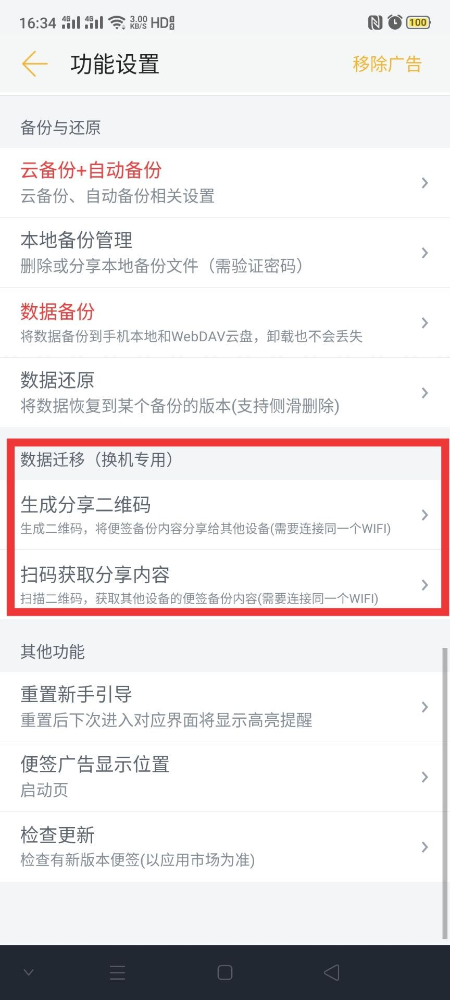
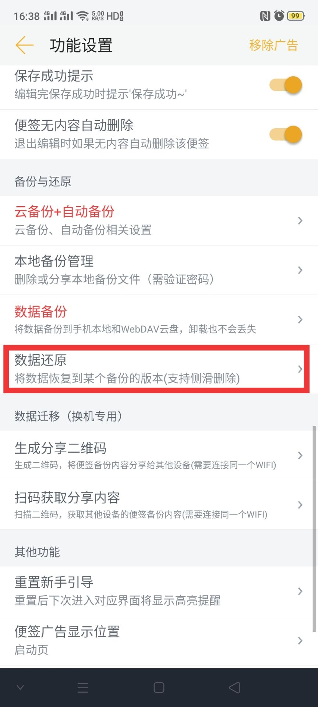
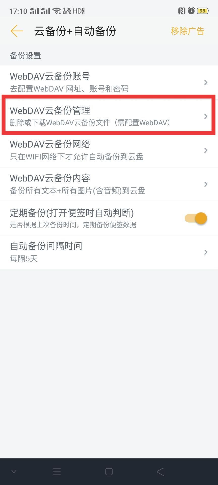
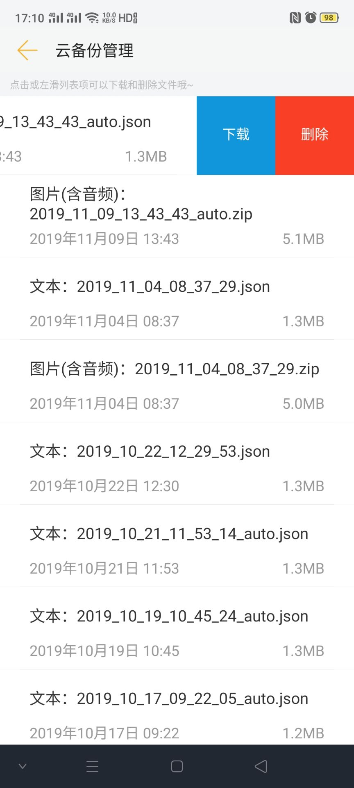

换手机如何迁移数据
1. 换手机如何把旧手机的便签数据迁移到新手机来？
方式一（推荐）：面对面迁移法
- 首先，确保新手机和旧手机都安装了《小周便签》。
- 然后，新手机和旧手机都连接了同一个WIFI，或者新手机连接了旧手机开的热点也行。
- 两个手机都打开便签夹右下方的【设置】界面。
- 两个手机都滑动到最下方，找到【生成分享二维码】和【扫码获取分享内容】。
- 然后，【旧手机】点击【生成分享二维码】。
- 【旧手机】选择一个最新的备份文件，记住这个备份文件的名字（最好是先去备份一下再选择，保证最新和数据的完整）。
- 然后，【新手机】点击【扫码获取分享内容】，分别扫两个二维码，直到两个数据都提示获取成功。
- 最后，【新手机】点击【数据还原】，选择刚才传过来的那个备份文件，点击【确定】，如果提示数据还原成功，数据就迁移完成了。


方式二：坚果云盘迁移法 (适用于使用了WebDAV云备份的用户)
- 首先，确保【旧手机】配置了【WebDAV备份】；
- 然后，【新手机】也配置相同的【WebDAV备份】账号；
- 然后，【旧手机】备份一下数据；
- 【新手机】点击【云备份+自动备份】中的【WebDAV云备份管理】
- 【左滑】并【下载】刚备份的两个文件(xxx.json和xxx.zip)
- 最后，【新手机】点击【数据还原】，选择刚才下载的那个备份文件，点击【确定】，如果提示数据还原成功，数据就迁移完成了。

